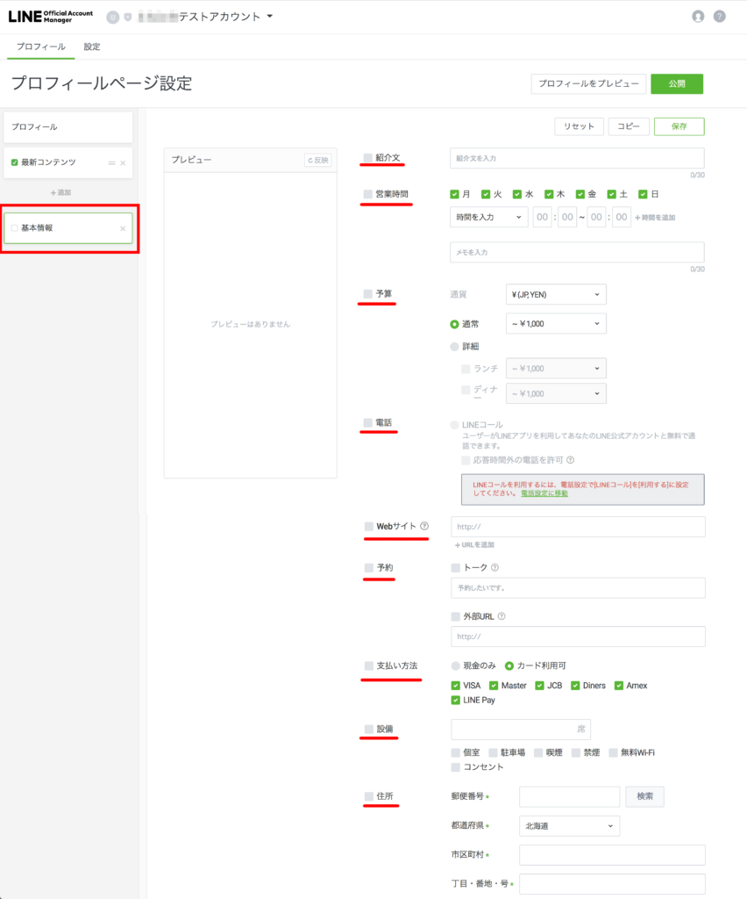
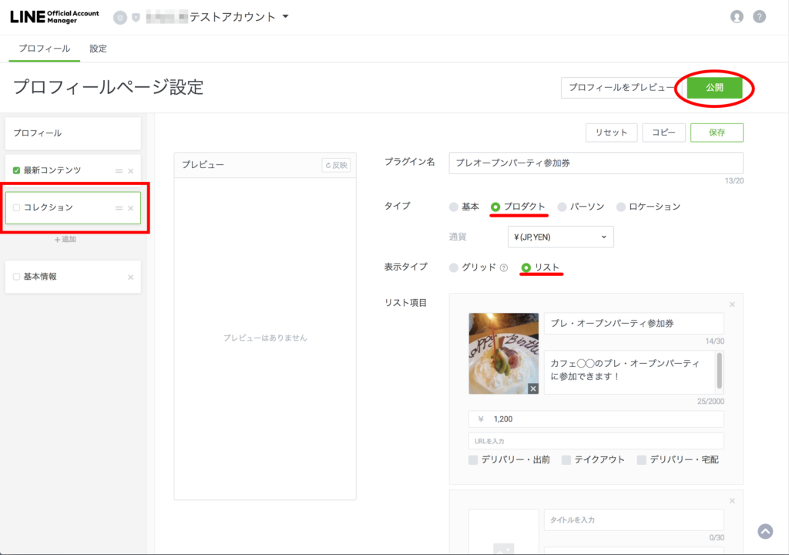
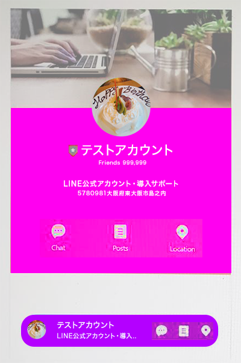

#009 プロフィール設定の続き

それでは、先週の「プロフィール設定」に続いて、「基本情報」を設定していきます。左サイドバーの「基本情報」をクリックし、お店の紹介文や実店舗の営業時間帯、予算、電話番号等々を登録しましょう。
１.基本情報の設定

ずらーーーっと項目が並んでいますね！ これだけ詳細に登録できれば、もうお店のWEBサイトは必要なくなるかもしれません。ので、ここはぜひ頑張ってひとつずつやってみてください！
既にあるWEBサイトのURLを友だちに公開できるのはもちろん、営業時間や休日、お支払い方法や駐車場の有無、Googleマップや最寄り駅まで表示できます。LINE上でお店を予約してもらうこともできますよ！ LINE通話で連絡をとることも可能です。
2.コレクション機能

左サイドバーの「コレクション」ボタンから設定を始めます。まずは「プラグイン名」に分かりやすい名前をつけておきます。タイプ別に四種類のプラグイン機能を利用できます。「タイプ」の内容は、次の表の通りです。
・基 本
・プ ロ ダ ク ト
・パ ー ソ ン
・ロ ケ ーション
テキスト文（お店の紹介など）
販売商品などのサービス
スタッフ紹介など
各店舗の住所とマップ（Google Map）
ここで気を付けなければいけない点は、右側のリスト項目の「追加」でリスト項目をいくら増やしていっても、友だちのスマホ上では最初の３項目しか表示されていないということです。
わかりやすく例をあげると、例えばあなたのお店には５人のスタッフがいるとします。初期設定では「パーソン」で３人しか紹介できませんが、まだあと2人紹介したいとします。そのような場合は、左側の「コレクション」下の「追加」ボタンからコレクションを増やし、ふたたびそこに「パーソン」ボタンで2人を追加します。すると、友だちのスマホ上でも５人のパーソンが表示されることになります。
完成したら、必ず「保存」ボタンをクリックし、右上「公開」ボタンをクリックしてあなたの充実したサービスを公開しましょう。ここで「公開」ボタンを押さないと、せっかく登録した内容もプロフィールに表示されませんので、忘れないよう気をつけてください！
3.LINE公式アカウントはこんなにスゴイ！

このように、プロフィールページや基本情報をきちんと充実させると、お店やサービスを紹介するために印刷するチラシと同じくらい、いや、どころかぐるなびやホットペッパー等と同等の広告効果があります！ LINE公式アカウントって広告宣伝費をがっつり節約できる上、ちゃんとお客様のスマホ上に情報を届けることができて素晴らしいなぁ…と心から思います。この時点ではまだ無料で利用できますので、どうぞ目一杯活用してください！！
もし、設定が難しかったり、何かお悩みごとがあれば、matsumotoまでご相談ください（今なら無料です！）。ぜひmatsumotoを友だち追加いただくか、無料相談ボタンからお気軽にご連絡くださいね。
まずはLINE公式アカウントを開設しましょう！
●LINE公式アカウントの開設方法はこちら
●LINE公式アカウントをオススメする理由はこちら
●LINE公式アカウントでできることはこちら
●Lステップでできることはこちら